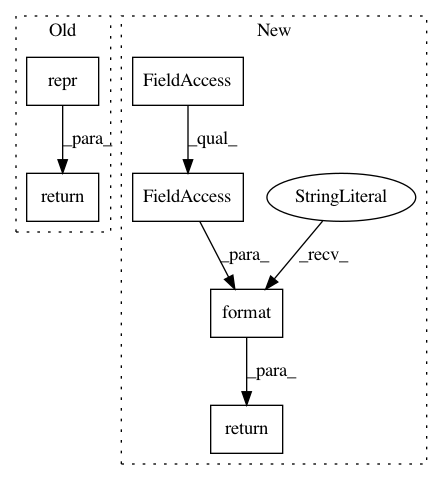

c2de6b7374261557565a19332c05ff08152b7b8d,torch_geometric/nn/modules/cheb_conv.py,ChebConv,__repr__,#ChebConv#,45
Before Change
return cheb_conv(x, edge_index, edge_attr, self.weight, self.bias)
def __repr__(self):
return repr(self)
After Change
return out
def __repr__(self):
return "{}({}, {}, K={})".format(self.__class__.__name__,
self.in_channels, self.out_channels,
self.weight.size(0) - 1)
In pattern: SUPERPATTERN
Frequency: 3
Non-data size: 6
Instances
Project Name: rusty1s/pytorch_geometric
Commit Name: c2de6b7374261557565a19332c05ff08152b7b8d
Time: 2018-05-23
Author: matthias.fey@tu-dortmund.de
File Name: torch_geometric/nn/modules/cheb_conv.py
Class Name: ChebConv
Method Name: __repr__
Project Name: rusty1s/pytorch_geometric
Commit Name: 085817bd89e3ac096d834da85b2c893c708bc660
Time: 2018-05-23
Author: matthias.fey@tu-dortmund.de
File Name: torch_geometric/nn/modules/gat.py
Class Name: GAT
Method Name: __repr__
Project Name: rusty1s/pytorch_geometric
Commit Name: 085817bd89e3ac096d834da85b2c893c708bc660
Time: 2018-05-23
Author: matthias.fey@tu-dortmund.de
File Name: torch_geometric/nn/modules/agnn.py
Class Name: AGNN
Method Name: __repr__